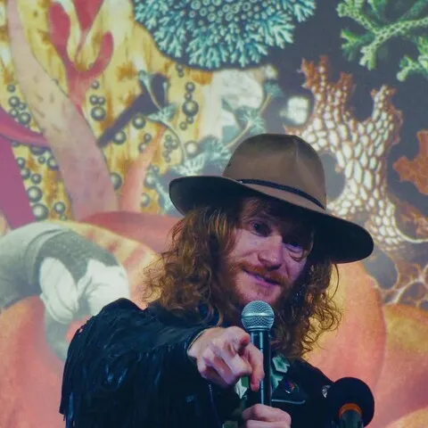

Zachary Marlow
Story Architect
Zachary has talked his way around the world on nothing but story. Making films through counterculture and indigenous nations across five continents, building movements that touched hundreds of thousands, creating media ecosystems that reached millions, working campaigns all the way up to the presidential. His superpower is seeing who you could be: he takes the smallest possibility and explodes it into an entire world, and turns even the most tragic thing that ever happened to you into the compost something alive grows from. He'll pull your golden thread all the way into the future, help you craft it into an enterprise, find the story that makes it sellable, and laugh the whole way there.